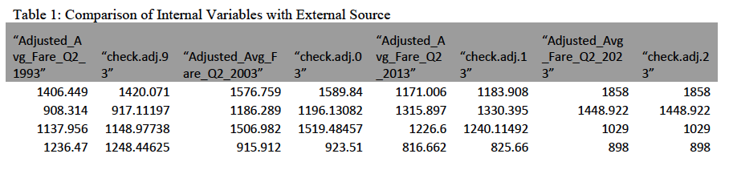
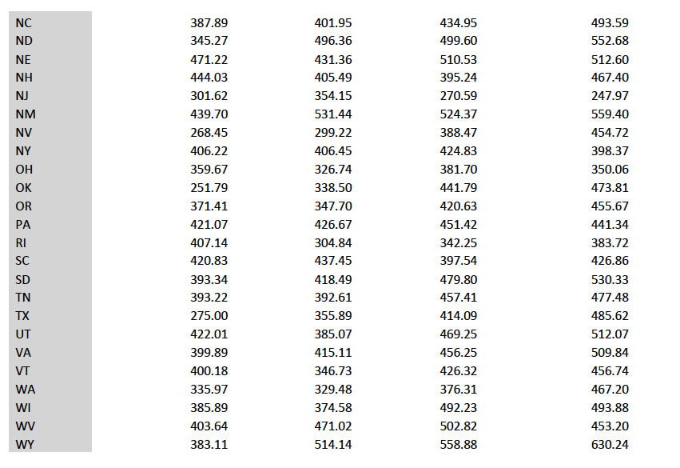
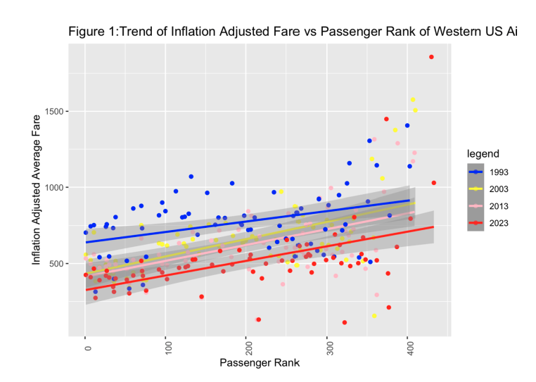
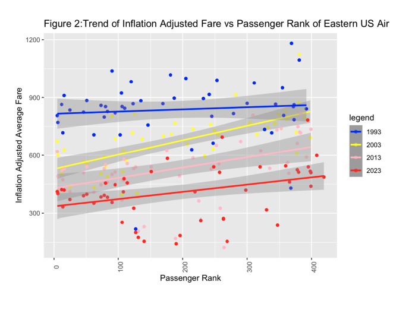
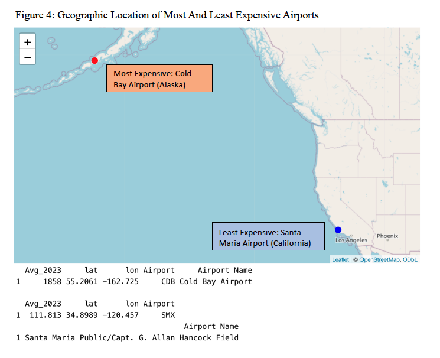

A LIMITED SCOPE OF THE COST OF AIR TRAVEL
Full Title: EVERYTHING IS AWFUL. OR IS IT? - A LIMITED SCOPE ANALYSIS OF THE COST OF AIR TRAVEL THROUGH THE YEARS (ONE THING THAT MAY NOT* BE OBJECTIVELY AWFUL)
Short Title: LIMITED SCOPE ANALYSIS OF Q2 AIRFARE IN THE U.S. OVER THE LAST 4 DECADES
Author: Adaeze Obinelo
Introduction:
Today’s political, economic, and social climate seems to be, on a good day, a succession of inconveniences, and on the worst of days, a never-ending cascade of unprecedented challenges and horrors. Especially thanks to recent economic inflation, everyday necessities are taking a greater and greater toll on the average consumer’s wallet. Via the consumer price index (CPI) (NBC news, 2023), the overall costs of food, gas and shelter increased significantly over the summer. This increase was certainly felt acutely here in Los Angeles, where gas rose as high as $6/gallon in some areas, and food prices continued to climb. Purchasing my airfare home this year, I felt the sting on my wallet particularly severely, and I found myself wondering “were airplane tickets always this high?”. I am not inexperienced in air travel, having flown frequently prior to college for athletics, during undergrad, and now as an adult to visit family. For some reason, when I think back to purchasing my tickets in the past, I cannot recall feeling the same unenthusiastic and reluctant resignation that I felt this year. For this reason, I thought it would be an interesting investigation to answer the following question; “How has airfare changes in the past few decades”. The present report aims to do exactly this, using the United States Bureau of Transportation Statistics (BTS) data on airfare.
Methods:
The following analysis was conducted using the United States Bureau of Transportation Statistic’s (BTS) record of Average Domestic Itinerary Fares. This dataset is compiled each financial quarter (Q1-Q4), and the most recent financial quarter data available is from Q2 of 2023. For each quarter, the dataset tabulated average flight fares by airport. Included for each airport was a variable called ‘2022 Passengers’, which compares the number of domestic passengers each airport saw for that time period to the number of passengers the same airport sees on average in the year 2022. This variable was used to calculate another variable “2022 Passenger Rank”, which assigns an ordinal rank to each airport by comparing the value equivalent to 10% of all passengers served in 2022. A missing value or a value of 0 for the variable “2022 Passenger Rank” indicates that these airports don’t provide commercial domestic flights, so entries with these values were removed (since they would not be airports the consumer is choosing from).
Due to the data limitations for the current financial year, data from the second financial quarter of 4 years, 1993, 2003, 2013, and 2023 was utilized for analysis. A 10-year spread was thought to be ideal for assessing the general trends in airfare data. The datasets from these chosen time frames were downloaded directly from the Transportation Bureau’s website, using the above link, into .csv files. Most of the data processing and cleaning was done using the dplyr, tidyverse and baseR packages. As part of data processing, variable names were altered to aid in the coding process. Variable types were also changed to the appropriate type (continuous or character).
For geographic analysis, states were categorized into “East” and “West” by U.S. census geographic zones, with Northeast, south and Midwest considered “East” and all remaining states considered “West”. Given that the research question centers around LAX and BOS airports, the overall dataset was queried for trends in relation to these two airports. Due to the great geographic distance between these airports, the overall dataset was stratified by location to better understand region-specific baseline trends. Scatterplots were used to visualize trends between continuous variables. Bar plots were used to visualize continuous variables by geographic location.
For additional analysis, coordinate data was taken from The Humanitarian Data Exchange which compiled a dataset of longitude and latitude values for 508 major US airports. This coordinate dataset was merged with the BTS datasets, and cross-validation was done by comparing the inflation adjusted fare variable for each year (Adjusted_Avg_Fare_Q2) provided originally with my dataset with an actual dollar to dollar conversion factor between that year and 2023(Table 1: Results of cross-validation). A new variable, “check.adj.xx” was created for each year of analysis by multiplying the (Average_xxxx) for each year by the inflation adjustment to the 2023 dollar value (1993: 2.13, 2003: 1.67, 2013: 1.32, 2023: 1).
Results
The Passenger Rank of LAX and BOS remained constant across all four time frames sampled; BOS ranking 6th, and LAX ranking 1st (Table 3), indicating that both airports see an extremely high number of US domestic flights per time frame sampled. However, neither LAX nor BOS were in states found to be the most expensive to fly out of in any of the Q2mdata sampled: The state with the highest average adjusted airfare in 1993 was Georgia (477.24, Table 1), the state with the highest average adjusted airfare in 2003 was New Mexico (531.44, Table 1), and the state with the highest adjusted average airfare in 2013 and 2023 was Alaska (596.00 and 641.09, Table 1). In comparison, the average airfare for California for 1993, 2003, 2013, and 2023 was 354.04, 342.62, 401.70 and 403.09, and the average airfare in Massachusetts for the same time points was 305.94, 426.40, 363.57, 392.25. The most expensive airport to fly out of in 2023 was Cold Bay Airport in Alaska, and the least expensive to fly out of was Santa Maria in California (Figure 4).
Comparing Passenger Rank to Inflation Adjusted Fare, it appears that as passenger rank increases in the Western states, Inflation Adjusted Average fare tends to increase for all time points (Figure 1). This trend was largely mirrored in the Eastern U.S. States, for all years except 1993, where there did not appear to be a strong association between passenger rank and fare (Figure 2). Importantly, it appears that adjusted airfare is lower in 2023 than it has been for the other time points in both the east and the west. Comparing the dollar amount of the average ticket at Logan and LAX between 1993 and 2023, one would be paying around $369 less for a ticket out of BOS, and around $279 less for a ticket out of LAX.
Conclusion
Evidently, by inflation adjusted values, I am paying less for a trip between LAX and BOS than I have in the past. This begs the question of why it feels as if I am not. This can probably be answered best by looking at the unadjusted fare comparisons in Figure 3. Looking specifically at unadjusted fares out of Logan and LAX by year which show that overall, the unadjusted fare for airline tickets out of LAX and BOS are higher in 2023 than compared to years prior. While inflation adjusted values provide a good gauge of the “true” cost of a purchase in relation to the strength of the dollar, unadjusted amounts are the “ouch” one feels when actually paying for something in the moment. Since the unadjusted values are higher than they have been in the past, this is likely why it anecdotally feels like airfare prices are going up.
The above study does have significant limitations, namely that limitations in man-power restricted our analysis to 4 timepoints separated by a decade. Due to this, this analysis definitely misses more acute variation in the dataset, and additionally does not account for the remaining financial quarters of the year. However, limited though it may be, it does provide a bit of assurance to those of us purchasing airfare.
Citations:
Jay, M. (2023, September 13). Inflation ticks upward to 3.7% for August 2023: Here’s how it could affect interest rates. NBCNews.com. https://www.nbcnews.com/business/economy/inflation-august-2023-number-will-interest-rates-keep-going-up-rcna104655
Figures and Tables:




